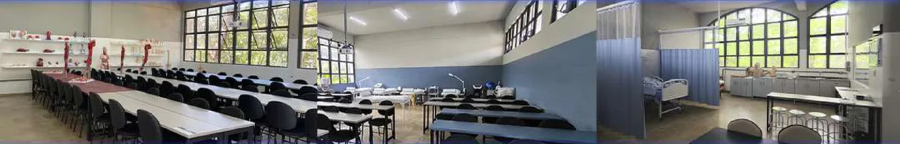
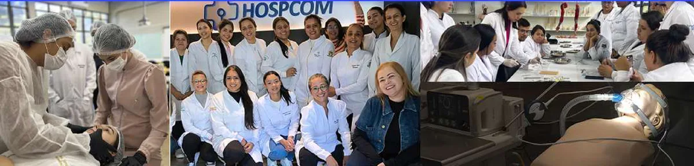
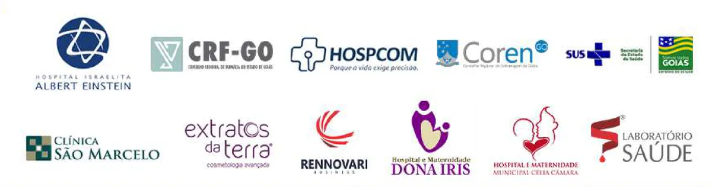

No pronto-socorro e na UTI, cada segundo define a vida do paciente. Hesitar não é opção.
Duas pós em uma: APH, trauma, ECG, ventilação mecânica, PICC e paciente crítico, com vivências clínicas em simulação realística e aulas presenciais uma vez por mês. 440h de Urgência e Emergência + 440h de UTI, com dupla certificação.
Protocolos complexos de urgência e o plantão da UTI cobram decisão imediata. Aqui você treina a conduta em simulação realística até ela virar rotina, e sai com dois títulos de especialista.
Público-alvo: enfermeiros que atuam ou querem atuar em pronto-socorro, APH, SAMU, unidades de terapia intensiva e serviços de emergência.
Resultados práticos, aplicáveis no plantão desde os primeiros módulos.
Protocolos de urgência, emergência e terapia intensiva aplicados com segurança e agilidade em situações críticas.
Avaliação de cenários complexos, classificação de risco e condução de atendimentos que exigem resposta imediata.
Liderança de equipes de enfermagem, coordenação de fluxos em pronto-socorro e UTI e implantação de processos.
Dupla certificação como diferencial competitivo para cargos estratégicos em hospitais de alta complexidade.
Ventilação mecânica, PICC, ECG, APH e trauma treinados em vivências clínicas para aplicar no próximo plantão.
Metodologia ITH 4.0: prática supervisionada, cases reais, material didático incluso e suporte contínuo do professor.
Dois eixos, duas certificações: da classificação de risco e do APH à ventilação mecânica avançada e ao paciente crítico na UTI.
10 módulos · certificação 1: APH, trauma, ECG e pronto-socorro.
8 módulos · certificação 2: ventilação, PICC, neurologia e paciente crítico.
Turma em Goiânia · vagas limitadas por turma
Você estuda sem parar de trabalhar e treina a conduta em aulas presenciais mensais e vivências clínicas, antes de aplicar no plantão.
Videoaulas, e-books e materiais científicos liberados mensalmente no portal do aluno.
Encontros teórico-práticos uma vez por mês, em laboratórios com simulação realística, para conciliar com a escala.
APH, distúrbios cardiovasculares e ECG, ventilação mecânica e emergências neurológicas treinados em cenários reais.
As datas de início de cada turma são confirmadas pelo consultor no momento da matrícula.
Professores atuantes em SAMU, pronto-socorro e terapia intensiva, que trazem para a sala o que realmente acontece no plantão.
Mais de 15 anos em terapia intensiva e gestão em saúde. Foi supervisora e coordenadora de UTI, implantou POPs e liderou equipes e comissões de segurança do paciente.
Mais de 15 anos de experiência em pronto-socorro e hospitais de alta complexidade, com especialização em Urgência e Emergência e em Cardiologia Hemodinâmica.
Mais de 10 anos em APH, urgência, emergência e UTI. Enfermeiro intervencionista e instrutor no Núcleo de Ensino e Treinamento do SAMU Centro-Sul.
Mais de 10 anos no desenvolvimento e treinamento sobre o uso de dispositivos médicos, com consultoria estratégica a instituições de saúde.
Um tour pela ITH Educação, nota 5 no MEC: estrutura, laboratórios e a equipe por trás da Pós em Urgência e Emergência + UTI.

Turma em Goiânia · vagas limitadas por turma
A ITH Educação atua como ponte entre o profissional e sua formação de excelência. Com uma comunidade que ultrapassa 12 mil alunos formados e presença em mais de 6 países, oferece cursos que transformam carreiras e vidas.
Nosso propósito é levar educação inovadora, prática e contínua, conectando o conhecimento técnico à realidade do mercado de saúde, para que cada profissional alcance onde realmente quer chegar.





Turma em Goiânia, com vagas limitadas por causa das vivências clínicas em simulação realística. Deixe seus dados e um consultor de carreira fala com você.
Um consultor de carreira da ITH vai falar com você pelo WhatsApp com as datas da turma de Goiânia e todos os detalhes da pós.
Prefere falar agora? Chame no WhatsApp"A pós me preparou para atuar em UTI com confiança, dominando protocolos avançados que aplico diariamente nos atendimentos críticos."
"Consegui a promoção para enfermeiro responsável da UTI após concluir a especialização. O curso foi decisivo para minha carreira."
"Antes eu me sentia insegura diante de situações graves. Hoje atuo com agilidade e segurança em pronto-socorro e terapia intensiva."
"Graças à formação, conquistei uma vaga em hospital de alta complexidade. A dupla certificação foi meu diferencial competitivo."
Emitido pela ITH Educação, reconhecida pelo MEC com nota máxima (Conceito 5), nos termos da Lei nº 9.394/96 e das resoluções do Conselho Estadual de Educação. O diploma digital fica disponível no portal, com QR Code de autenticidade.
Consulte a instituição no cadastro e-MEC.
O acesso ao portal é liberado imediatamente após a matrícula, com os módulos liberados mensalmente. As datas das aulas presenciais e das vivências clínicas são confirmadas pelo consultor no momento da matrícula.
São duas pós em uma: 440 horas de Urgência e Emergência e 440 horas de UTI, em 18 meses de formação, com dois diplomas ao final. Ao concluir, você ganha mais 3 meses de acesso ao conteúdo completo.
Sim. O diploma é digital, emitido pela ITH Educação (nota 5 no MEC), com QR Code de autenticidade e validade em todo o território nacional. Ele tem a mesma validade e peso da versão presencial e não menciona a modalidade cursada.
Não há TCC tradicional. Em vez disso, você desenvolve um plano de negócio estruturado, pensado para transformar ideias em projetos reais na sua instituição ou na sua consultoria.
A pós é voltada a enfermeiros que atuam ou querem atuar em pronto-socorro, APH, SAMU, UTI e serviços de emergência.
RG e CPF, título de eleitor, comprovante de endereço, certidão de nascimento ou casamento, certificado e histórico do ensino médio, diploma e histórico da graduação, foto digital e, para o sexo masculino, comprovante de reservista.
Tudo em PDF, enviado pelo Portal do Aluno, 100% online.
Sim. Cada módulo tem fórum com resposta do professor em até 24h, além da Central de Atendimento ao Aluno (CAA) com suporte técnico 24h por WhatsApp e e-mail.
880 horas, vivências clínicas em simulação realística, dupla certificação e diploma reconhecido pelo MEC.
Quero mais informações sobre a pós